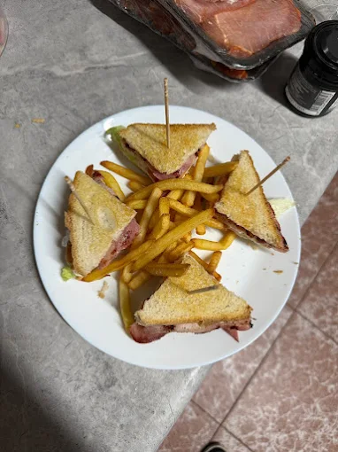
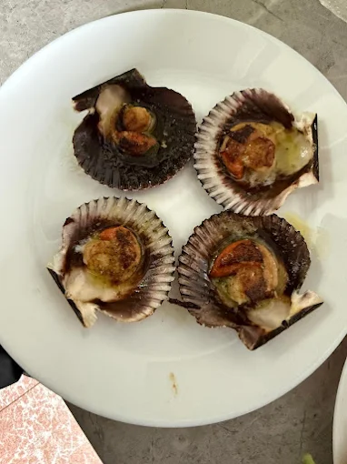
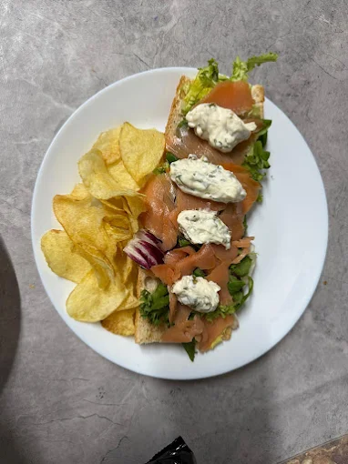
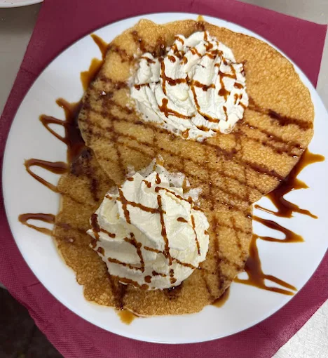

En el corazón de Torrubia del Campo, fusionamos la cocina tradicional castellana con un servicio impecable. Un espacio donde el tiempo se detiene y los sabores cobran vida.
Torrubia del Campo, Cuenca